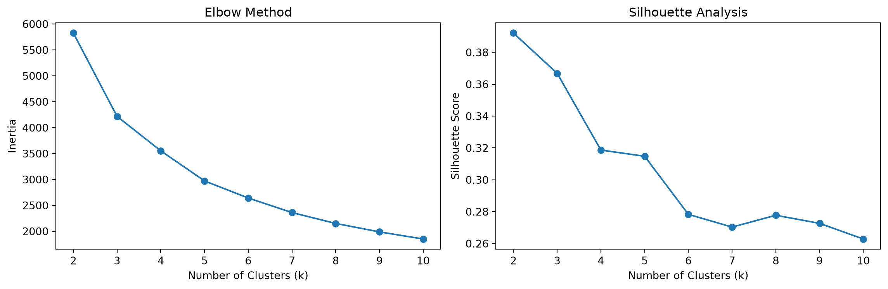
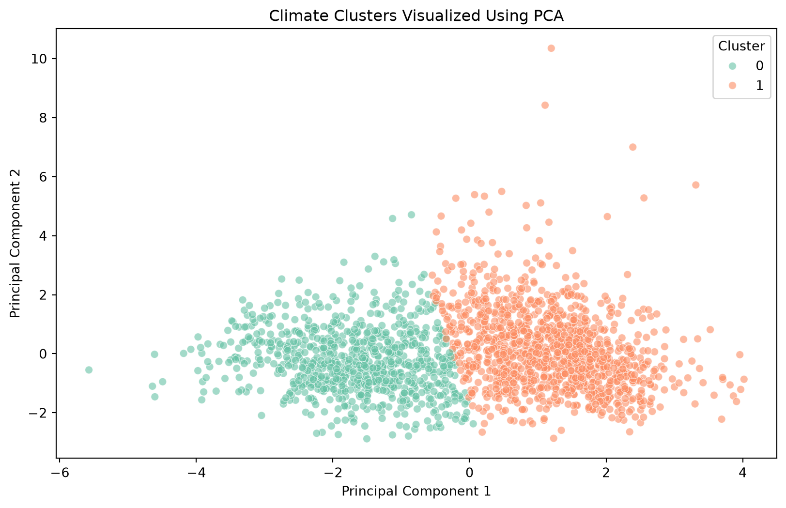
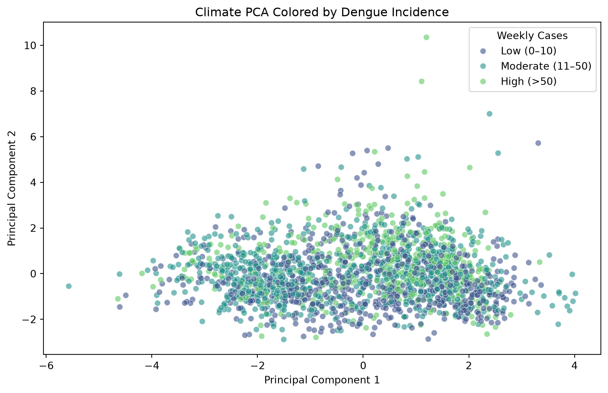

import numpy as np
import pandas as pd
import matplotlib.pyplot as plt
import seaborn as sns
from sklearn.preprocessing import StandardScaler
from sklearn.cluster import KMeans
from sklearn.metrics import silhouette_score
from sklearn.decomposition import PCA
full_df = pd.read_csv(
"data/full_df.csv",
parse_dates=["weekdate"]
)
full_df = full_df.sort_values("weekdate").reset_index(drop=True)
features = [
"temp_avg",
"temp_max",
"temp_min",
"precip_total",
"humidity_avg"
]Unsupervised Learning
Loading Data and Packages
K-Means Clustering
Standardize Climate Variables
scaler = StandardScaler()
X_scaled = scaler.fit_transform(full_df[features])Determine Optimal Number of Clusters
k_values = range(2, 11)
inertias = []
silhouette_scores = []
for k in k_values:
kmeans = KMeans(
n_clusters=k,
random_state=42,
n_init=10
)
labels = kmeans.fit_predict(X_scaled)
inertias.append(kmeans.inertia_)
silhouette_scores.append(
silhouette_score(X_scaled, labels)
)
# Plot elbow method and silhouette scores
fig, axes = plt.subplots(1, 2, figsize=(12, 4))
axes[0].plot(k_values, inertias, marker="o")
axes[0].set_xlabel("Number of Clusters (k)")
axes[0].set_ylabel("Inertia")
axes[0].set_title("Elbow Method")
axes[1].plot(k_values, silhouette_scores, marker="o")
axes[1].set_xlabel("Number of Clusters (k)")
axes[1].set_ylabel("Silhouette Score")
axes[1].set_title("Silhouette Analysis")
plt.tight_layout()
plt.show()
Fit K-Means Model
kmeans_final = KMeans(
n_clusters=2,
random_state=42,
n_init=10
)
full_df["cluster"] = kmeans_final.fit_predict(X_scaled)
full_df["cluster"].value_counts().sort_index()cluster
0 817
1 1159
Name: count, dtype: int64Analyze Dengue Incidence by Cluster
cluster_summary = full_df.groupby("cluster").agg(
weeks=("conf_cases", "count"),
mean_cases=("conf_cases", "mean"),
median_cases=("conf_cases", "median"),
max_cases=("conf_cases", "max"),
avg_temp=("temp_avg", "mean"),
avg_precip=("precip_total", "mean"),
avg_humidity=("humidity_avg", "mean")
)
cluster_summary.round(2)| weeks | mean_cases | median_cases | max_cases | avg_temp | avg_precip | avg_humidity | |
|---|---|---|---|---|---|---|---|
| cluster | |||||||
| 0 | 817 | 30.99 | 19.0 | 338.0 | 24.88 | 12.53 | 75.86 |
| 1 | 1159 | 51.06 | 20.0 | 544.0 | 27.06 | 23.00 | 78.10 |
Principal Component Analysis (PCA)
PCA Visualization of Climate Clusters
pca = PCA(n_components=2)
X_pca = pca.fit_transform(X_scaled)
full_df["PC1"] = X_pca[:, 0]
full_df["PC2"] = X_pca[:, 1]
print("Explained variance ratio:", pca.explained_variance_ratio_)
print("Total variance explained:", pca.explained_variance_ratio_.sum())
plt.figure(figsize=(10, 6))
sns.scatterplot(
data=full_df,
x="PC1",
y="PC2",
hue="cluster",
palette="Set2",
alpha=0.6
)
plt.title("Climate Clusters Visualized Using PCA")
plt.xlabel("Principal Component 1")
plt.ylabel("Principal Component 2")
plt.legend(title="Cluster")
plt.show()Explained variance ratio: [0.5553653 0.33867867]
Total variance explained: 0.8940439647544053
PCA Visualization of Dengue Incidence
full_df["case_category"] = pd.cut(
full_df["conf_cases"],
bins=[-1, 10, 50, np.inf],
labels=["Low (0–10)", "Moderate (11–50)", "High (>50)"]
)
plt.figure(figsize=(10, 6))
sns.scatterplot(
data=full_df,
x="PC1",
y="PC2",
hue="case_category",
palette="viridis",
alpha=0.6
)
plt.title("Climate PCA Colored by Dengue Incidence")
plt.xlabel("Principal Component 1")
plt.ylabel("Principal Component 2")
plt.legend(title="Weekly Cases")
plt.show()
How Much Each Climate Variable Contributes to Each PC
loadings = pd.DataFrame(
pca.components_.T,
columns=["PC1", "PC2"],
index=features
)
loadings.round(3)| PC1 | PC2 | |
|---|---|---|
| temp_avg | 0.593 | -0.081 |
| temp_max | 0.541 | -0.287 |
| temp_min | 0.578 | 0.127 |
| precip_total | 0.124 | 0.639 |
| humidity_avg | 0.073 | 0.697 |